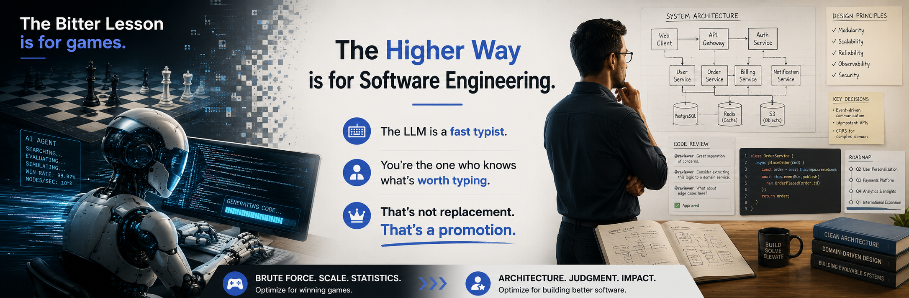

Copyright © 2026 Tim Menzies. MIT License.
Fancy version.

Tim Menzies · Apr 2026
Rich Sutton, 2019. The Bitter Lesson. Sixty years of evidence: brute-force compute beats human-engineered knowledge. Chess heuristics? Scale won. Edge detectors? Scale won. Phoneme models? Scale won.
His conclusion: stop baking your intelligence into the system. Just assume you can scale using tomorrow's CPU.
But there is a problem: SE isn't chess.
Every one of Sutton's examples shares a quiet assumption: you can assess the "What" the moment it's created. Move 47 — good or bad? Instant feedback.
Reliability? Measured eighteen months into prod. Maintainability? Ask whoever inherits the LLM-slop in 2027. Understandability? Good luck explaining it to the regulator at 2am.
Brooks 1976 knew this. The V-diagram isn't just testing — it's epistemology. After project i, you carry domain knowledge into project i+1. The code is not the artifact. What you learned building it is the artifact.
Swartout 1983, XPLAIN system. Blunt finding: jump straight to code and you lose the Why. The domain principles that drove the refinement — gone. The system can't justify itself. Forty years later, trillion parameters, same problem.
This isn't theory. Look at the posters. Pattern after pattern:
The sugar high Sutton's highway promises — followed by a maintenance crisis that lands, as always, on you.
Predicted outcome. Not a bug.
Not rejection of AI. Elevation of the engineer.
Domain models are the intermediaries. Markdown skill files. DSLs that describe the why in fifty lines instead of fifty thousand. Post-conditions from specs. Fuzzing mutators carried forward from prior projects. Symbolic. Browsable. A human can challenge them.
Lethbridge: compact symbolic models actively improve LLM performance — less hallucination, tighter reasoning. Pugh: these models are where you define experiments. Does X beat Y? Now you have a testbed instead of a prayer.

Copyright © 2026 Tim Menzies. MIT License.
Fancy version.